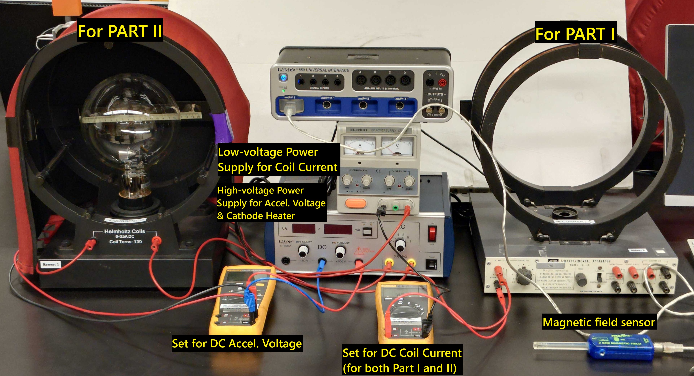
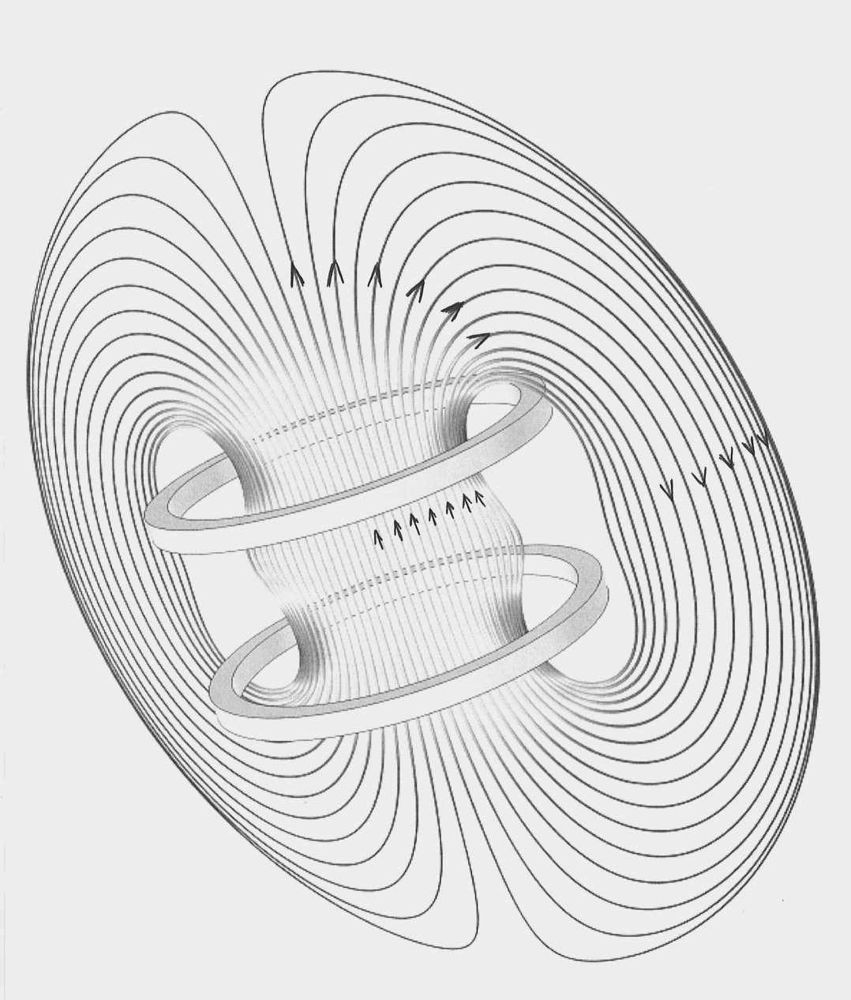
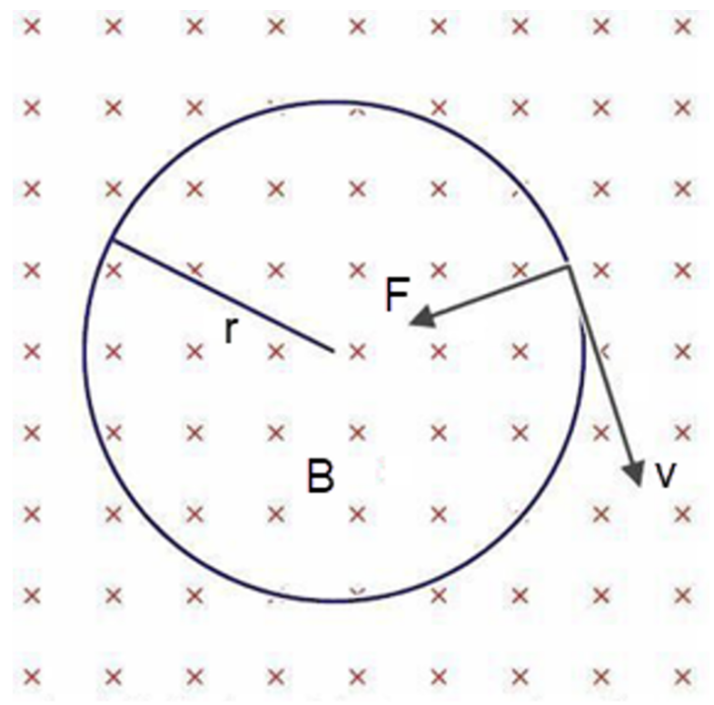
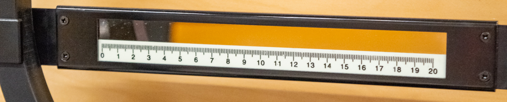
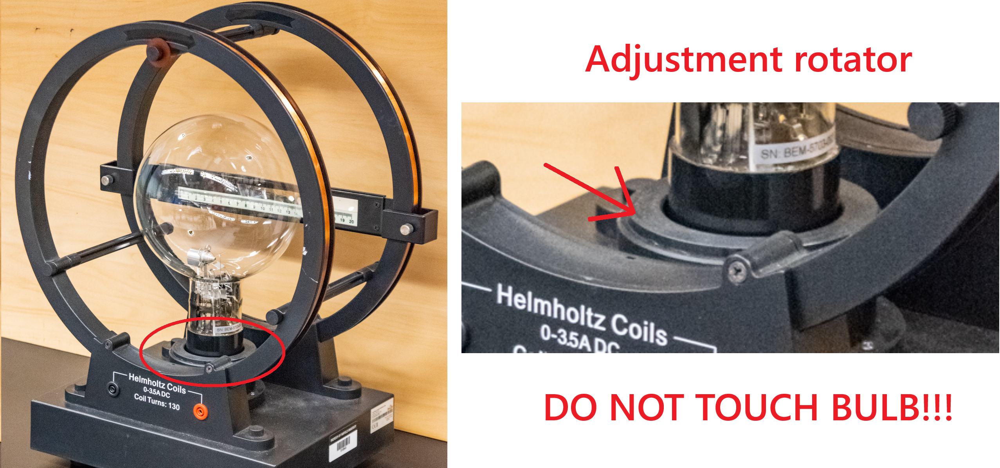
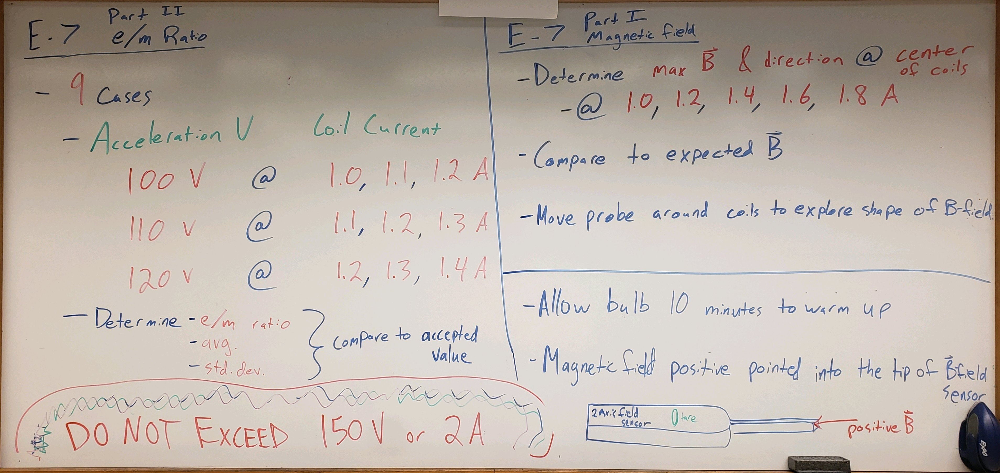
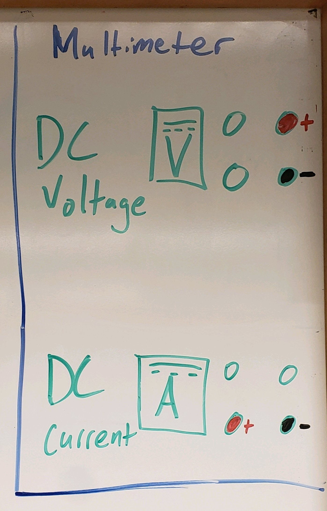

Measurement of Helmholtz Magnetic Field & Electrons’ e/m Ratio#
Background Overview#
OVERALL GOALS
Use a set of Helmholtz coils and electron beam vacuum bulb to:
Discover the electron!
Measure magnetic field strength
Experimentally determine the charge-to-mass (e/m) ratio for the electron
Understand the relationship between current, magnetic force, and electron deflection. Consider: if magnetic force increases, what happens to the electrons’ path and why physically is that happening?
Today, you will conduct two experiments. The first will focus on measuring the magnetic field strength near the center of a pair of Helmholtz coils (without vacuum bulb, Fig. 121-right). The second will focus on using those magnetic field measurements to determine the charge-to-mass ratio of the electron as it travels within a pair of Helmholtz coils with a vacuum bulb (Fig. 121)
{kind=link}

Fig. 121 Example experimental setup. Left) Helmholtz coils with vacuum bulb in place (second experiment). Right) Helmholtz coils without bulb (first experiment) with magnetic field sensor. Center) Power supplies and multimeters.#
Part I: Magnetic Field Measurement#
● Background (Part I)#
○ Magnetic Field Strength of Helmholtz Coils#
STOP!!! DO NOT REMOVE THE BULBS!. You will use the Helmholtz coils that are already without the vacuum bulb. To create a uniform magnetic field, a pair of identical circular, current-carrying coils are arranged one radius apart. When current flows through those coils, a continuous magnetic field should pass through the center of the coils and loop back around the outside like in Fig. 122.
{kind=link}

Fig. 122 Magnetic field lines of a pair of Helmholtz coils.#
The expected magnetic field produced near the axis of the pair of Helmholtz coils we are using is given by the equation:
where:
\(a = 0.15\) m (radius of the Helmholtz coils)
\(N = 130\) (the number of turns on each Helmholtz coil)
\(\mu_0 = 4\pi\times 10^{-7}\) N/A² (the permeability of free space)
\(I\) = the current through the Helmholtz coils
and \(B\) has units of Tesla.
Throughout the following procedure, you will experimentally characterize the Helmholtz coils (rather than just using the specifications above) to determine the relationship between \(B\) and \(I\) of your experimental setups. You will use this experimentally-determined relationship to calculate B-field strengths later in Part II: e/m Ratio of the Electron.
○ Equipment (Part I)#
Category |
Items |
|---|---|
Magnetic Field |
• Helmholtz coils, empty (different set from Part II; do not remove bulbs) |
Power Supply |
• Low voltage DC power supply \((0 - 24\,\text{V})\) |
Current Measurement |
• Fluke multimeter connected in series through \(10\text{A}\) fuse |
Magnetic Field |
• PASPORT 2-Axis Magnetic Field Sensor |
● Experimental Procedure (Part I)#
○ Preview#
PROCEDURE OVERVIEW (Part I)
Characterize the magnetic field produced by the Helmholtz coils
Measure the magnetic field strength near the center of the coils over a range of currents to determine the relationship between B-field strength and current (i.e. experimentally determine the coefficients in (142)).
While the empty set of coils is slightly different to the one used later, they have comparable specifications and produce a magnetic field similar to that used later in Part II: e/m Ratio of the Electron.
○ Preliminary Setup#
Create a common data table including:
\(a\): radius of the Helmholtz coils
\(N\): Number of turns on each Helmholtz coil
\(\mu_0\): permeability of free space, \(4\pi\times 10^{-7}\) N/A\(^2\)
Zero Magnetic Field Sensor. For accurate B-field measurements, we want to account for all magnetic fields not generated by your Helmholtz coils. To do so:
Open the provided CAPSTONE file, click “Record”, and the magnetic field strength in the axial direction (i.e. positive when pointing into the end of the magnetic field sensor) will be displayed in Tesla (T). Ensure the low-voltage power supply is turned OFF 🟥 so no current is flowing through the coils
While holding the sensor inside the coils in-line with the expected direction of the B-field (double check with right-hand rule; also see Fig. 122), press the green Tare button on the sensor to zero it out. Note: you will hold the sensor in the same orientation as you will in the subsequent steps, why?
Confirm with your plot that the B-field measurements are showing zero; if not, try again.
○ Experimental B vs. I#
While holding the B-field sensor near the center of the coils, turn on 🟢 the low-voltage power supply (likely the one on top). Turn current knob to max (preventing current limits), and use the voltage controls to gradually increase the current to 1.00 A through the Helmholtz coils. Please do not exceed 2 A at any time (we don’t want them burning out or breaking). Record the max B-field strength for the this trial near the center of the coils. Repeat for currents of 1.2, 1.4, 1.6, and 1.8 A. Create a relevant data table including \(I\), \(B_\text{experimental}\), \(B_\text{expected}\).
Using the magnetic field sensor, explore the region within the coils and describe the region of consistent or inconsistent B-field.
Uniform B-Field?
MOVE AROUND A FEW CENTIMETERS IN ALL DIRECTIONS, is it uniform?
How far can you move from the central axis until that changes?
Also explore around the coils and find the shape of the magnetic field; does it change direction outside of the coils as in Fig. 122?
Compare your values for magnetic field strength near the axis within the coils to the expected values from (142). If they disagree beyond 1c0%, retake any necessary trials.
Plot your experimental \(B\) vs. \(I\). Also, determine the slope of the relationship using
LINEST()(for review, see Plotting in Excel). Take note as these values will be used later for B-field calculations. Note regarding later use of the slope representing the \(B\) vs. \(I\) relationship for our coils today: it will be called \(S_\text{B.vs.I}\) in the next section.
Part II: e/m Ratio of the Electron#
● Background (Part II)#
One of the most important pieces of information concerning the nature of electrons can be obtained by observing their motion in a magnetic field. It is a relatively easy task to determine the charge-to-mass ratio of the electron with the apparatus provided.
An electron, emitted from the cathode with speed \(v\), enters the magnetic field set up by the Helmholtz coils. According to the right hand rule, the electron will experience a centripetal force causing it to move in a circular path (see Fig. 123).
{kind=link}

Fig. 123 Following right-hand rule for charge moving through a B-field (into screen), the electron (negative charge) will feel centripetal force inwards.#
Therefore, setting the magnetic force equal to the mass times centripetal acceleration (Newton’s Second Law) yields:
Rewriting this expression, we obtain:
where \(B\) is the magnetic field, in today’s case given by \(S_\text{B.vs.I}\) (units of T/A) times the current, \(I\), in amperes, in a similar form to the expected value from earlier in (142). That is to say:
The radius \(r\) of the circular path is measured using a scale with a mirror above it (Fig. 124) to eliminate effect of parallax that can arise from the electron beam and ruler existing in different planes from the observer (\(\sim 7.5\,\text{cm apart}\), larger separation but similar in effect to the separation of the grid and phosorus screen of the CRT in the Acceleration of Electrons lab; example of parallax in Fig. 125 — notice the left edge of the bulb appears to shift by almost 2 cm!).
{kind=link}

Fig. 124 Mirror and ruler, movable to line up and bisect the circular electron beam.#

Fig. 125 Effects of parallax from head-on view from the same plane parallel to the ruler/mirror: slightly to the left, center, and slightly to the right. Bottom) The ruler at the back (and the rear wire coil) is clearly out of line with the line of sight depending on where you are looking from. View the electron beam such that you overlap its reflection in the mirror to account for the parallax — see demo video for additional examples.#
One method of obtaining a value for the linear velocity \(v\) makes use of the fact that a charged particle gains an energy \(e\,V\) when it falls through a voltage \(V\). Therefore, if we knew the voltage through which the electron was originally accelerated, we could write \(e\,V =\frac{1}{2}m v^{2}\) or:
Substituting for v in the expression for e/m, we obtain:
Notice that we need know only the voltage through which the electron was accelerated, in addition to the value of B and r, in order to evaluate the ratio \(e/m\) for the electron. The accepted value for e/m for the electron is \(1.759\times 10^{11}\) C/kg.
○ Equipment (Part II)#
Category |
Items |
|---|---|
Magnetic Field Apparatus |
• Helmholtz coils with cover and bulb |
Low Voltage Supply |
• DC power supply \((0 - 24\,\text{V})\) |
High Voltage Supply |
• DC power supply \((0 - 500\,\text{V})\) to accelerate electrons |
Electrical Measurement |
• 2x Fluke multimeters: |
Accessories |
• Flashlights (to help see ruler when taking beam position measurements) |
Electrical Connections |
• 3x 3’ banana-plug cables |
● Experimental Procedure (Part II)#
○ Preview#
PROCEDURE OVERVIEW (Part II)
Characterize the charge-to-mass ratio of the electron
Conduct twelve total trials measuring the path of the electrons, where for each trial you will change:
acceleration voltage \(V\)
coil current \(I\)
Measure left- and right-extents of the path at center of beam, lined up with itself in the mirror (parallax)
Calculate e/m ratio using B-field found in Part I
○ Demo Video: Notes on Part II#
Some clarifications/notes:
Give about 10 minutes for the cathode to fully heat up
Increasing/decreasing current shows the beam path take a tighter/wider circle, respectively
Increasing/decreasing voltage shows the beam path take a wider/tighter circle, respectively
Example of parallax towards end. In YouTube, you can jump forward/back with
,and.keys to go frame-by-frame and notice the beam’s reflection in the mirror relative to the ruler.
If embedding is broken, follow: https://www.youtube.com/watch?v=vqtHMKxzGdg
○ Preliminary Setup#
In doing the experiment, caution must be exercised in using the HIGH VOLTAGE DC power supply. You should not need to disconnect or change any wiring. Go ahead and turn on 🟢 the high-voltage power supply (likely the one on bottom) to allow the cathode heater to heat up — this will take about 10 minutes.
Create a common data table with:
\(e\): electron charge \(1.602E^{-19}\,\text{C}\)
\(m\): electron mass \(9.109E^{-31}\,\text{kg}\)
\(e/m_\text{accepted}\): accepted charge-to-mass ratio of the electron (can be calculated from above values)
Create a single data table with columns including (but not limited to):
Trial number
Lab member’s initials (person looking at beam) — Note: no need to break up the table by group member, this column considers that for you
\(V\): accelerating voltage
\(\delta V\): estimated accelerating voltage uncertainty
\(I\): coil current
\(\delta I\): coil current uncertainty
\(B\): magnetic field strength based on \(S_\text{B.vs.I}\) found earlier
\(\delta B\): magnetic field strenght uncertainty based on \(\delta S_\text{B.vs.I}\) found earlier
left edge position & its uncertainty
right edge poisition & its uncertainty
diameter & its uncertainty
radius & its uncertainty
\(e/m_\text{experimental}\): experimental charge-to-mass ratio of the electron
\(\delta e/m_\text{experimental}\): experimental charge-to-mass ratio of the electron uncertainty (from error propagation) , the current in the coil, the magnetic field, the left and right edges, the diameter, and the radius in [m]. Include a column for the ratio \(e/m\) calculated in each row from your measurements.
\(\Delta e/m_\text{experimental vs. accepted}\): Magntitude of difference between experimental and accepted values of \(e/m\)
○ Experimental Data Collection#
For the first trial (and subsequent trials), adjust the accelerating voltage and coil current (record from multimeters with uncertainties) as indicated for all 12 trials today in Table 19. You should be close to the target voltages and currents; for later calculations you will use your experimental values. Please switch students between the different accelerating voltages. DO NOT EXCEED 175 V OR 2.0 A AT ANY TIME!
Student |
Target Accelerating Voltage (V) |
Target Coil Current (A) |
|---|---|---|
Student #1 |
100 |
1.00, 1.25, 1.50, 1.75 |
Student #2 |
130 |
1.00, 1.25, 1.50, 1.75 |
Student #3 (or #1 |
160 |
1.00, 1.25, 1.50, 1.75 |
Calculate the B-field strength \(B\) based on (145).
For uncertainty: MINIMIZE \(B\) with both \(\delta S_\text{B.vs.I}\) and \(\delta I\) and take the difference from the calculated \(B\) to get the uncertainty \(\delta B\) (similar fashion to past labs, \(\delta B = B - B_\text{minimized}\)).
Radius: With the electrons traveling in a circular path, the radius of the path will be determined by measuring the diameter and dividing by two. Therefore read the scale on both the left and right edges of the circular path. The scale and mirror at the rear of the tube is adjustable. Position the top of the scale horizontally at the center of the circular beam path. YOU MUST MOVE THE RULER UP OR DOWN TO BISECT THE CIRCULAR BEAM TO COVER WIDEST EXTENT OF THE CIRCLE.
determine left position and estimate the position uncertainty
similarly determine right position and estimate the position uncertainty
The position readings are to be measured at the center of the beam. When determining the scale reading, close one eye and move your viewpoint so the electron path and its reflection in the mirror can be made coincident; this is correcting for parallax as discussed earlier. Align one side of the beam with its image in the mirror and read and record the position of the center of the beam on the scale. Then move your viewpoint to align the other side of the beam its image in the mirror and again read the scale.
Read and record the scale reading to the nearest millimeter.
Determine radius \(r\) and its uncertainty \(\delta r\) by first calculating diameter as the difference of the two positions and calculate the diameter uncertainty. Subtract the reading on the left edge from the reading on the right edge to calculate the diameter. Divide the diameter by two to find the radius and its uncertainty.
Calculate the individual trial’s:
Charge-to-mass ratio \(e/m_\text{experimental}\) with (147)
Charge-to-mass ratio uncertainty
MINIMIZE and take the difference to calculate its uncertainty. \(\delta e/m_\text{experimental} = e/m_\text{experimental} - e/m_\text{experimental,minimized}\).
Consider all uncertainties (\(\delta V\), \(\delta B\), and \(\delta r\)). Does any one measurement uncertainty seem to have the largest impact?
Difference to accepted value \(\Delta e/m_\text{experimental vs. accepted}\)
If your e/m value seems reasonable, change the voltage and current to the values indicated for each subsequent trial (see Table 19), switch lab members as indicated, and complete the previous steps for that trial.
If any trials are clearly erroneous, retake the data.
○ Explore Electron Path in B-field#
The base that the bulb is plugged into can turn. Rotate the bulb while voltage and current are still on (do not touch the bulb, just the rotator). See Fig. 126. No need for data here, but take note for your post-lab analysis of how the electron path does and does not change. Does the radius change? Why or why not?
{kind=link}

Fig. 126 Bulb rotator.#
○ Data Analysis#
AFTER ALL TRIALS: Calculate the following average values, again remembering the note below:
\(e/m_\text{experimental}\)
\(\delta e/m_\text{experimental}\)
\(\Delta e/m_\text{experimental vs. accepted}\)
Average of Uncertainties
Using the average of individual trial uncertainties is generally not statistically rigorous because independent random uncertainties should decrease as \(1/\sqrt{N}\).
However, for simplicity in today’s lab and assuming systematic errors dominate, we can use it as an acceptable conservative upper bound of our experimental average’s true uncertainty.
Comparing them to the accepted value, does your average value agree with the accepted value within your uncertainty range? How does each measurement affect your final values?
● Summary & Cleanup#
Create a summary table of your data (e.g. relevant final result values, averages, and differences from Part I and Part II).
When you are finished, reset your experimental setup before leaving.
CLEAN UP
Please return your experimental station back to the way you found it or better:
Close (DO NOT SAVE) Capstone
Power supplies are OFF 🟥, voltage knobs turned down to zero
Multimeters off
Post-Lab Submission — Interpretation of Results#
● Finalized Spreadsheets#
Make sure to submit your finalized data table (Excel sheet).
Please include concise summary table.
Please include plot:
\(B\) vs \(I\) (Part I)
● Post-lab Writeup#
In a paragraph, summarize your error analysis. Be both qualitative and quantitative.
What is the precision of your equipment?
What are possible sources of systematic (i.e. affecting accuracy) and random (i.e. affecting precision) errors?
Focusing on Part 1, where you characterized the helmholtz coils: qualitatively, where would uncertainties in your \(F_B\) vs. \(I\) relationship come from?
Focusing on Part 2, where you discover the electron: quantitatively what are your measured uncertainties, and, based on these uncertainties, how do your final results change? I.e. how do your different measurement and slope uncertainties make your final results larger or smaller?
Change different variables by your best estimation of measurement uncertainties in your Excel sheet; what variables affect the accuracy of your final results the most?
If larger or small, are they more or less accurate to expected values?
In a paragraph, summarize the results you have determined for all cases. Consider:
What was the point of today’s lab; what did we aim to discover?
PART I
For the empty Helmholtz coils (no bulb), where does the magnetic field peak and where does it go to zero; physically, why does that happen?
Was the B-field uniform in the center where the \(e/m\) bulb and electron path would sit? I.e by how much does the field strength vary when moving from the center of the coils the widest extent of the electron beam from the first experiment?
Does the measured B-field in the center of the coils generally agree with the expected field strength from (142)? What could cause your experimental value to not agree?
PART II
For the Helmholtz coils with bulb, do your experimental results agree with the accepted values of \(e/m\)?
Why, physically, do the electrons travel in a circle, rather than just continuing in a straight line?
If you were to increase the accelerating voltage, how does the path change; explain physically?
If you were to increase the coil current, how does the path change; explain physically?
If you rotate the bulb so the electron path travels in-line with the direction of the B-field, how does the electron path change? How does it stay the same? Does the radius change? Why or why not? Explain physically.
The Whiteboard#
{kind=link}

Fig. 127 Overview.#
{kind=link}

Fig. 128 Multimeter settings.#